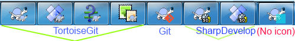

To find out what the different settings are for, just leave your mouse pointer a second on the textbox/checkbox... and a helpful tooltip will popup.
This dialog allows you to specify your preferred language,
and the Git-specific settings.
Selects your user interface language. What else did you expect? Only languages of installed language packs are listed. You can download language packs on the TortoiseGit download page or help translating.
If checked, TortoiseGit will contact its download site once a week to see if there is a newer version of the program available. Use if you want an answer right away. The new version will not be downloaded; you simply receive an information dialog telling you that the new version is available.
You can create a Library in which to group working copies which are scattered in various places on your system.
TortoiseGit needs to know which git.exe to use for it's operations. Enter the full path to git.exe here.
git.exe must not be marked to be run in elevated mode (i.e. Run as administrator or run in any compatibility mode).
There is a known issue in msysGit/Git for Windows:
Git for Windows provides two git.exe-files (one in a folder named bin and one in a folder named cmd).
Make sure Git.exe Path points to the bin-folder within the Git for Windows installation folder.
If you don't use Git for Windows, please see the sections for "Cygwin Git" and "MSYS2 Git" below as special settings are required here.
As a general note: There is no official support for Cygwin or MSYS2 Git in TortoiseGit. The TortoiseGit developers only use Git for Windows. Bug reports, however, are welcome.
In order to debug problems you can open TortoiseGit advanced settings and set DebugOutputString to "true" (the section called “Advanced Settings”). Start capturing the debug output.
Then start TortoiseGit settings, click on Check now and observe the debug messages.
If your git installation needs an extra entry in the PATH environment variable, you can enter it here and it will get added to the PATH environment variable automatically when TortoiseGit starts.
This is especially needed if you installed the developer version of msysGit ("Full installer (self-contained) if you want to hack on Git" with the filename msysGit-fullinstall-*.exe),
in this case it is necessary that the [MSYSGIT-INSTALL-PATH]\mingw\bin-folder is on the path (i.e. entered in the Extra PATH textbox) in order to execute git.exe.
Often you can see if you need this when you start git.exe in [MSYSGIT-INSTALL-PATH]\mingw\bin-folder and you get a message box saying that a DLL is missing.
As noted above: There is no official support for Cygwin Git in TortoiseGit (do not enable this for the "Git for Windows" package!). The TortoiseGit developers only use Git for Windows. Bug reports, however, are welcome. If you really want to use it, here are the steps you have to perform:
1) Select the [CYGWIN-INSTALL-PATH]\bin-folder as git.exe folder.
2) Configure the HOME environment variable in Windows, so that Cygwin and TortoiseGit are using the same home directory and global git-config. Use the normal Windows notation here (e.g., "C:\Users\USERNAME"). By default, TortoiseGit uses the Windows home directory which is normally located under c:\Users and Cygwin uses its own home directories which are located under [CYGWIN-INSTALL-PATH]\home.
3) Configure AutoCrLf, this is necessary as TortoiseGit and Cygwin Git have different defaults. The default in Cygwin Git is true.
4) Go to TortoiseGit the section called “Advanced Settings” and set CygwinHack to true in order to activate Cygwin workarounds.
5) Reboot.
As noted above: There is no official support for MSYS2 Git in TortoiseGit (do not enable this for the "Git for Windows" package!). The TortoiseGit developers only use Git for Windows. Bug reports, however, are welcome. If you really want to use it, here are the steps you have to perform:
1) Select the [MSYS2-INSTALL-PATH]\usr\bin-folder as git.exe folder.
2) Configure the HOME environment variable in Windows, so that MSYS2 and TortoiseGit are using the same home directory and global git-config. Use the normal Windows notation here (e.g., C:\Users\USERNAME). By default, TortoiseGit uses the Windows home directory which is normally located under c:\Users and MSYS2 uses its own home directories which are located under [MSYS2-INSTALL-PATH]\home.
3) Configure AutoCrLf, this is necessary as TortoiseGit and MSYS2 Git might have different defaults.
4) Go to TortoiseGit the section called “Advanced Settings” and set Msys2Hack to true in order to activate MSYS2 workarounds.
5) Reboot.
This page allows you to specify which of the TortoiseGit context menu
entries will show up in the main context menu (on the first level),
and which entries will appear
in the TortoiseGit submenu. By default most items are unchecked and
appear in the submenu.
If you want to hide specific entries, see the section called “Context Menu 2 Settings”.
Most of the time, you won't need the TortoiseGit context menu, apart for folders that are under version control by Git. For non- versioned folders, you only really need the context menu when you want to do a checkout. If you check the option Hide menus for unversioned paths, TortoiseGit will not add its entries to the context menu for unversioned folders. But the entries are added for all items and paths in a versioned folder. And you can get the entries back for unversioned folders by holding the Shift key down while showing the context menu.
If there are some paths on your computer where you just don't want
TortoiseGit's context menu to appear at all, you can list them in
the box at the bottom.
A trailing * is treated as a wildcard character matching
any characters. Additionally, a path ending with \ will
match a folder and all its files and subfolders.
Please note: * cannot be used as a wildcard
character within a path.
If you right click and drag folder/file in Windows Explorer, a context menu will be shown when you drop. It provides some TortoiseGit actions. You can uncheck to prevent from carelessly clicking the TortoiseGit actions.
There's a different settings page for the Windows 11 context menu. That page also has a button to register the TortoiseGit entries in the context menu. You only have to do this if TortoiseGit was installed as a different user.
This page allows you to specify which of the TortoiseGit context menu
entries will be hidden by default. Selected item will only be visible when you hold the Shift
key on right click (this is the so-called extended context menu, please don't mix this with the TortoiseGit submenu, which is also configurable (cf. the section called “Context Menu Settings”)).
This configuration helps you to reduce the number of context menu entries according to your needs.
This dialog allows you to configure some of TortoiseGit's
dialogs the way you like them.
Limits the number of log messages that TortoiseGit loads and displays when you first select → (cf. the section called “Log Dialog”). The number of log messages can be limited by a fixed number of revisions to display, it can remember the last selected date when the Log Dialog is opened again, it can be limited to the last N year(s)/month(s)/week(s), or just be unlimited (i.e., all revisions are shown; this is the default). When a default limitation is active, the From label has a blueish background in the Revision Log dialog. By opening the context menu on the From date picker, you can configure the default limit or disable the default limit for the current dialog.
Selects the font face and size used to display the log message itself in the middle pane of the Revision Log dialog, and when composing log messages in the Commit dialog.
If the standard long messages use up too much space on your screen use the short format.
An asterisk is inserted as the prefix of log message in Log dialog.
If you frequently find yourself comparing revisions in the top pane of the log dialog, you can use this option to allow that action on double-click. It is not enabled by default because fetching the diff is often a long process, and many people prefer to avoid the wait after an accidental double-click, which is why this option is not enabled by default.
Normally renamed files are listed as long/path/for/file.txt (from long/path/to/file.txt).
If you check this option renamed files will be listed in a shorter format (long/path/{to => for}/file.txt),
however, this abbreviated format might be harder to understand.
Show symbols on ref labels to substitute part of the ref names in order to make them smaller. If this option is enabled, the following description and example will apply. If there is only a single remote, an up-arrow symbol (↑) will substitute the remote name part of each remote branch. If the remote branch is the upstream of a local branch, an equivalent symbol (≡) will substitute the branch name part of the remote branch.
Load/saves log cache in .git folder (tortoisegit.data, tortoisegit.index) to boost performance of subsequent use of log list.
If this option is disabled, the cache files are not read or written.
Default is enabled.
Shows the Gravatar image of the author of the commit in Log Dialog.
The URL is customizable so you may specify more options supported by the server,
or use your own avatar server.
The default URL is https://gravatar.com/avatar/%HASH%?d=identicon
Currently, the supported parameter is %HASH%, which is the SHA256 email hash.
To specify a default image, add d= parameter,
e.g. https://gravatar.com/avatar/%HASH%?d=identicon
See
Gravatar: Image Requests
for a list of parameters.
Shows tag/branch labels after the commit message.
Displays for every selected commit a so called "branch revision number" in the commit message field of the Log Dialog.
The branch revision number is calculated by calling git rev-list --count --first-parent [SHA1] and
represents the number of commits between the beginning of time and the selected commit.
This number is NOT guaranteed to be unique, especially if you alter the history (e.g., using rebase) or
use several branches at the same time. It can be seen "kinda unique" per branch in case you don't alter its history
(e.g. by rebasing, resetting) and only commit or merge other branches on it. This number is only displayed
for first-parent commits and not for commits on non-fast-forward merges (here duplicate numbers could occur).
See
https://gcc.gnu.org/ml/gcc/2015-08/msg00148.html
and
https://gitlab.com/tortoisegit/tortoisegit/merge_requests/1
for more details.
Shows describe above commit message in the Log dialog.
For example, v0.21.0-589-gdeadc43 refers to the commit
deadc43 that is 589 commits ahead the tag v0.21.0.
Note: Describe may take longer to run if the commit
is far ahead away from a tag.
Determine reference lookup strategy: Available options: Annotated tags, All tags, All refs. Default strategy is annotated tags only. If your repository uses lightweight tags to mark releases, choose All tags.
Number of chars of the abbreviated commit id to show in describe. Default is 7.
Whether to use the long format even when a shorter name could be used.
For example, when the commit g28f087c has tag v0.21.0,
it still shows long format v0.21.0-0-g28f087c instead of just v0.21.0.
This dialog allows you to configure some more of TortoiseGit's
dialogs the way you like them.
TortoiseGit can automatically close all progress dialogs when the action is finished without error. This setting allows you to select the conditions for closing the dialogs. The default (recommended) setting is Close manually which allows you to review all messages and check what has happened. However, you may decide that you want to ignore some types of message and have the dialog close automatically if there are no critical changes.
Auto-close if no further options are available
will close the dialog if git.exe exited cleanly (i.e. no error occurred)
and no further options are presented in the progress dialog.
Auto-close if no errors
always closes the dialog if git.exe exited with 0 error code.
When you revert local modifications, your changes are discarded. TortoiseGit gives you an extra safety net by sending the modified file to the recycle bin before bringing back the pristine copy. If you prefer to skip the recycle bin, uncheck this option.
When enabled, if you close Progress Dialog or Sync Dialog with a running git process, you will be asked for confirmation before killing it. This avoids closing the dialog by accident that kills running git process.
When enabled, the startup position of Sync Dialog will be randomized. If you open many Sync Dialogs and press pull button at the same time, you may easily press the pull button in any previous Sync Dialog if it finishes and becomes foreground.
When enabled, unchanged refs will not be shown in Ref Compare List, so you can focus on changed refs. Currently, this list is in Sync Dialog Ref List tab.
git.exe execution timings and timestamp
When enabled, git.exe execution timings and timestamp will be appended at the end of progress message.
When enabled, tag list is sorted in reversed order. It is because newer versions are more useful. e.g. Export Dialog allows to select the latest tag when this option is enabled.
The commit dialog includes a facility to parse the list of filenames being committed. When you type the first 3 letters of an item in the list, the auto-completion box pops up, and you can press Enter to complete the filename. Check the box to enable this feature.
The auto-completion parser can be quite slow if there are a lot of large files to check. This timeout stops the commit dialog being held up for too long. If you are missing important auto-completion information, you can extend the timeout.
When you type in a log message in the commit dialog, TortoiseGit stores it for possible re-use later. By default it will keep the last 25 log messages for each repository, but you can customize that number here. If you have many different repositories, you may wish to reduce this to avoid filling your registry.
Note that this setting applies only to messages that you type in on this computer. It has nothing to do with the log cache.
The normal behavior in the commit dialog is for all modified (versioned) items to be selected for commit automatically. If you prefer to start with nothing selected and pick the items for commit manually, uncheck this box.
This dialog allows you to configure some of TortoiseGit's
dialogs the way you like them.
This third page mainly affects the Commit dialog and the settings which are stored in git config files.
If you have problems entering/storing data please see the section called “The hierarchical Git configuration”.
TortoiseGit by default uses the spell checker modules which are also
used by OpenOffice, LibreOffice and Mozilla.
Optionally, the Windows 8+ spell checker can also be used (needs to be enabled manually at the moment).
If you have those installed or use the Windows spell checker
this property will determine which spell checker to use, i.e.
in which language the log messages for your project should
be written.
The tgit.projectlanguage config key sets the language
module the spell checking engine should use when you enter
a log message. You can find the values for your language
on this page:
MSDN: Language Identifiers
.
Enter this value in decimal. For example English (US) can be entered as 1033.
Use -1 to disable the spell checker.
tgit.logminsize
sets the minimum length of a log message for a commit.
If you enter a shorter message than specified here, the commit button
is disabled. This feature is very useful for reminding you to
supply a proper descriptive message for every commit.
If this property is not set,
or the value is zero, empty log messages are still not allowed.
tgit.logwidthmarker is used with projects which
require log messages to be formatted with some maximum width
(typically 72 characters) before a line break. Setting this
property to a non-zero will place a marker to indicate the maximum width
and performs line wrapping. Note: this feature
will only work correctly if you have a fixed-width font
selected for log messages.
tgit.warnnosignedoffby is used with projects which
require Signed-off-by line in commit messages.
tgit.icon is used with projects which wish to show the logo
on the taskbar for easier identification when multiple TortoiseGit application instances
of different projects are running at the same time.

If icon is not 16x16 pixels in size, it will be automatically scaled.
Supported formats are .ico, .png, .jpg, .gif, .bmp.
If no icon is included by that project, you may find one on you own,
put it in .git folder and set the relative path in local config. e.g. .git/logo.ico
If you want to disable it, you may set tgit.icon as an empty string in local config.
It will fallback to a color block when disabled or load failed.
Note that the advanced option GroupTaskbarIconsPerRepo should be 3 or 4 in order to use this function.
This dialog allows you to configure the text colors
used in TortoiseGit's dialogs the way you like them.
A conflict has occurred during update, or may occur during merge. Update is obstructed by an existing unversioned file/folder of the same name as a versioned one.
This color is also used for error messages in the progress dialogs.
Items added to the repository.
Items deleted from the repository, missing from the working copy, or deleted from the working tree and replaced with another file of the same name.
Changes from the repository successfully merged into the working tree without creating any conflicts.
Add with history, or paths copied in the repository. Also used in the log dialog for entries which include copied items.
A reference which points to git notes, under refs/notes name space.
In revision graph, use local branch color for current branch. You may not want to emphasize current branch of a local repository in revision graph.
other settings:
The dialogs in TortoiseGit can be shown in a dark mode on Windows 10 1809 and later. This feature also requires that dark mode for applications is enabled in the Windows 10 settings.
Note that not all controls in all dialogs are shown in a dark theme.
This dialog allows you to configure the text colors
used in TortoiseGit's dialogs the way you like them.
This page allows you to choose the items for which TortoiseGit will
display icon overlays.
By default, overlay icons and context menus will appear in all open/save dialogs as well as in Windows Explorer. If you want them to appear only in Windows Explorer, check the Show overlays and context menu only in explorer box.
Ignored items and Unversioned items are not usually given an overlay. If you want to show an overlay in these cases, just check the boxes.
You can also choose to mark folders as modified if they contain unversioned items. This could be useful for reminding you that you have created new files which are not yet versioned. This option is only available when you use the default status cache option (see below).
Since it takes quite a while to fetch the status of a working tree, TortoiseGit uses a cache to store the status so the explorer doesn't get hogged too much when showing the overlays. You can choose which type of cache TortoiseGit should use according to your system and working tree size here:
Caches all status information in a separate process
(TGitCache.exe). That process
watches all drives for changes and fetches the status
again if files inside a working tree get modified.
The process runs with the least possible priority so
other programs don't get hogged because of it. That
also means that the status information is not
real time but it can take a few
seconds for the overlays to change.
Advantage: the overlays show the status recursively, i.e. if a file deep inside a working tree is modified, all folders up to the working tree root will also show the modified overlay. And since the process can send notifications to the shell, the overlays on the left tree view usually change too.
Disadvantage: the process runs constantly, even if you're not
working on your projects. It also uses around 10-50 MB of RAM
depending on number and size of your working trees. From version 1.7.0 to 1.7.12
TGitCache did not check the contents of the files,
it just checked the last modification time against the time stored
in the git index file.
Starting from 1.7.13 TGitCache now also checks the contents of the files by default.
If you want to restore the old behavior, you can disable checking the contents
via the Settings dialog -> Advanced and set TGitCacheCheckContentMaxSize to "0".
Caching is done directly inside the shell extension DLL. Each time you navigate to another folder, the status information is fetched again (recursively).
Advantage: can show the status in real time.
Disadvantage: only one folder is cached and for big working trees, it can take much more time to show a folder in explorer than with the default cache or with shell mode. The Shell variant only shows differences of the filesystem to the git index (does not include revision specific information, e.g. if you remove a file from the index the file will show up as unversioned, but with TGitCache the file will show up as deleted until you commit this change).
Caching is done directly inside the shell extension DLL, but only for the currently visible folder. Each time you navigate to another folder, the status information is fetched again.
Advantage: needs only very little memory (around 1 MB of RAM) and can show the status in real time.
Disadvantage: Since only one folder is cached, the overlays don't show the status recursively. For big working trees, it can take more time to show a folder in explorer than with the default cache. The Shell variant only shows differences of the filesystem to the git index (does not include revision specific information, e.g. if you remove a file from the index the file will show up as unversioned, but with TGitCache the file will show up as deleted until you commit this change).
With this setting, the TortoiseGit does not fetch the status at all in Explorer. Because of that, files don't get an overlay and folders only get a 'normal' overlay if they're versioned. No other overlays are shown, and no extra columns are available either.
Advantage: uses absolutely no additional memory and does not slow down the Explorer at all while browsing.
Disadvantage: Status information of files and folders is not shown in Explorer. To see if your working trees are modified, you have to use the “Check for modifications” dialog.
By default, overlay icons and context menus will appear in all open/save dialogs as well as in Windows Explorer. If you want them to appear only in Windows Explorer, check the Show overlays and context menu only in explorer box.
You can force the status cache to None for elevated
processes by checking the
Disable status cache for elevated processes box.
This is useful if you want to prevent another TGitCache.exe
process getting created with elevated privileges.
You can also choose to mark folders as modified if they contain unversioned items. This could be useful for reminding you that you have created new files which are not yet versioned. This option is only available when you use the default status cache option (see below).
The next group allows you to select which classes of storage should show overlays. By default, only hard drives are selected. You can even disable all icon overlays, but where's the fun in that?
Network drives can be very slow, so by default icons are not shown for working trees located on network shares.
USB Flash drives appear to be a special case in that the drive type is identified by the device itself. Some appear as fixed drives, and some as removable drives.
The Exclude Paths are used to tell TortoiseGit those paths for which it should not show icon overlays and status columns. This is useful if you have some very big working trees containing only libraries which you won't change at all and therefore don't need the overlays, or if you only want TortoiseGit to look in specific folders.
Any path you specify here is assumed to apply recursively, so none of the
child folders will show overlays either. If you want to exclude
only the named folder, append ?
after the path.
The same applies to the Include Paths. Except that for those paths the overlays are shown even if the overlays are disabled for that specific drive type, or by an exclude path specified above.
Users sometimes ask how these three settings interact. For any given path check the include and exclude lists, seeking upwards through the directory structure until a match is found. When the first match is found, obey that include or exclude rule. If there is a conflict, a single directory spec takes precedence over a recursive spec, then inclusion takes precedence over exclusion.
An example will help here:
Exclude: C: C:\develop\? C:\develop\tgit\obj C:\develop\tgit\bin Include: C:\develop
These settings disable icon overlays for the C: drive, except for
c:\develop. All projects below that directory will
show overlays, except the c:\develop folder itself,
which is specifically ignored. The high-churn binary folders are also
excluded.
TGitCache.exe also uses these paths to restrict its scanning. If you want it to look only in particular folders, disable all drive types and include only the folders you specifically want to be scanned.
SUBST Drives
It is often convenient to use a SUBST drive
to access your working trees, e.g. using the command
subst T: C:\TortoiseGit\doc
However this can cause the overlays not to update, as
TGitCache will only receive one notification when
a file changes, and that is normally for the original path. This means
that your overlays on the subst path may never
be updated.
An easy way to work around this is to exclude the original path
from showing overlays, so that the overlays show up on the
subst path instead.
Sometimes you will exclude areas that contain working trees, which saves TGitCache from scanning and monitoring for changes, but you still want a visual indication that a folder contains a working tree. The Show excluded folders as 'normal' checkbox allows you to do this. With this option, working tree folders in any excluded area (drive type not checked, or specifically excluded) will show up as normal and up-to-date, with a green check mark. This reminds you that you are looking at a working tree, even though the folder overlays may not be correct. Files do not get an overlay at all. Note that the context menus still work, even though the overlays are not shown.
As a special exception to this, drives A:
and B: are never considered for the
Show excluded folders as 'normal' option.
This is because Windows is forced to look on the drive, which can
result in a delay of several seconds when starting Explorer, even
if your PC does have a floppy drive.
You can change the overlay icon set to the one you like best. Especially you can disable overlays which you do not need like assume-valid and skip-worktree, however other Tortoise* tools use these two for different purposes.
Note that if you change overlay set, you may have to restart
your computer for the changes to take effect.
Because the number of overlays available is severely restricted,
you can choose to disable some handlers to ensure that the ones
you want will be loaded. Because TortoiseGit uses the common
TortoiseOverlays component which is shared with other Tortoise
clients (e.g. TortoiseSVN, TortoiseCVS, TortoiseHg) this setting will affect
those clients too.
For a description of how icon overlays correspond to Git status and other technical details, read the section called “Icon Overlays”.
Windows explorer can just handle a fixed number different overlay providers (15) and TortoiseGit is using 6 of these
(these 6 are handled by TortoiseOverlays and, thus, shared with TortoiseSVN and TortoiseCVS). If the TortoiseGit icons
are not correctly displayed this is likely caused by other programs which provide overlays (like DropBox, Owncloud, BoxSync
and various others) and register with a higher priority. Use the Start registry editor button for opening
the registry editor at the key where the overlay handlers are registered. Just delete or rename the ones you don't need OR
prepend the Tortoise ones with a double quote or space characters so that those come first in the list.
For more information please see TortoiseGit FAQ.
Here you can configure your proxy server, if you need one to get
through your company's firewall.
The proxy server settings here do only affect Git for Windows (i.e., HTTP and HTTPS protocols). If you are using OpenSSH/PuTTY/Tortoise(Git)Plink you have to set up the proxy server settings there separately. In order to do this, you need the main PuTTY tool, which is not shipped with TortoiseGit. Preferably you store the proxy settings to the "Default Settings" configuration there, so that it is applied by default.
If you need to set up per-repository proxy settings, you will
need to use the Git config file to
configure this. Consult the section called “git-config(1)” for more details.
You can also specify which program TortoiseGit should use to establish a secure connection to a git repository which is access using SSH. We recommend that you use TortoiseGitPlink.exe. This is a version of the popular Plink program, and is included with TortoiseGit, but it is compiled as a Windowless app, so you don't get a DOS box popping up every time you authenticate.
You must specify the full path to the executable. For TortoiseGitPlink.exe this is the standard TortoiseGit bin directory. Use the button to help locate it, e.g.:
"C:\Program Files\TortoiseGit\bin\TortoiseGitPlink.exe"
If you want to use OpenSSH shipped by Git for Windows/msysGit just enter ssh.exe.
One side-effect of not having a window is that there is nowhere for any error messages to go, so if authentication fails you will simply get a message saying something like “Unable to write to standard output”. For this reason we recommend that you first set up using standard Plink. When everything is working, you can use TortoiseGitPlink with exactly the same parameters.
TortoiseGitPlink does not have any documentation of its own because it is just a minor variant of Plink. Find out about command line parameters from the PuTTY website
To avoid being prompted for a password repeatedly, you might also consider using a password caching tool such as Pageant. This is also available for download from the PuTTY website or included in the TortoiseGit package. (Also see the section called “Authentication”.)
Finally, setting up SSH on clients is a non-trivial process which is beyond the scope of this help file. However, you can find a guide in the TortoiseGit FAQ listed under Appendix F, Tips and tricks for SSH/PuTTY.
This page allows you to specify configure how mails should be send.
When this option is selected, TortoiseGit directly connects to the SMTP server(s) (on port 25) which is/are responsible for the specific destination email-address(es). This is the default for TortoiseGit (unless some different method is configured).
This might be problematic if your ISP blocks outgoing SMTP connections (port 25) or you have a dial-up internet connection. In the ladder case some destination MTAs might not accept your mails or mark them as SPAM.
When this option is selected, TortoiseGit uses the Microsoft Messaging API (MAPI) for sending mails. For this, you need a MAPI capable mail client (e.g. Thunderbird or Outlook).
If you don't send patches as attachments, you might need to make sure that no auto line wrapping takes place. For Thunderbird there is an add-on (Toggle Word Wrap) available.
This is the recommended way for sending mails. Just enter the same data as in your mail tools (MUA).
Here you can define your own programs that TortoiseGit should use. The default setting is to use tools which are installed alongside TortoiseGit.
Read the section called “External Diff/Merge Tools” for a list of some of the external diff/merge programs that people are using with TortoiseGit.
An external diff program may be used for comparing different
revisions of files. The external program will need to
obtain the filenames from the command line, along with
any other command line options. TortoiseGit uses
substitution parameters prefixed with %.
When it encounters one of these it will substitute the
appropriate value. The order of the parameters will depend
on the Diff program you use.
The original file without your changes
The window title for the base file
Your own file, with your changes
The window title for your file
Full path to the original file
Full path to your file
The revision of the original file, if available
The revision of the second file, if available
Path to the working tree
The window titles are not pure filenames.
TortoiseGit treats that as a name to display and creates
the names accordingly. So e.g. if you're doing a
diff from a file in revision 123 with a file
in your working tree, the names will be
filename: revision 123
and
filename: working tree
For example, with ExamDiff Pro:
C:\Path-To\ExamDiff.exe %base %mine --left_display_name:%bname --right_display_name:%yname
or with KDiff3:
C:\Path-To\kdiff3.exe %base %mine --L1 %bname --L2 %yname
or with WinMerge:
C:\Path-To\WinMerge.exe -e -ub -dl %bname -dr %yname %base %mine
or with Araxis:
C:\Path-To\compare.exe /max /wait /title1:%bname /title2:%yname %base %mine
If you have configured an alternate diff tool, you can access TortoiseGitMerge and the third party tool from the context menus. → uses the primary diff tool, and Shift+ → uses the secondary diff tool.
Instead of TortoiseGitUDiff an external viewer program for unified-diff files (GNU diff or patch files) may be used.
Basically, there is no parameter required - the file name if the unified diff file to be opened will be appended automatically.
If you need to pass it as a different parameter the substitution %1 can be used.
There also is the parameter substitution %title available for passing the title to be shown in the title bar (i.e., meta data of the diff).
For example, with Notepad2 (shipped with TortoiseGit):
Notepad2.exe /s "Diff Files" /t %title
or (equivalent)
Notepad2.exe /s "Diff Files" /t %title %1
If you have configured an alternate unified diff tool, you can access TortoiseGitUDiff and the third party tool from the context menus. When you hold the Shift-key while opening the context menu the secondary unified diff tool is started.
An external merge program used to resolve conflicted files. Parameter substitution is used in the same way as with the Diff Program.
the original file without your or the others changes
The window title for the base file
your own file, with your changes
The window title for your file
the file as it is in the repository
The window title for the file in the repository
the conflicted file, the result of the merge operation
The window title for the merged file
Path to the working tree
For example, with Perforce Merge:
C:\Path-To\P4Merge.exe %base %theirs %mine %merged
or with KDiff3:
C:\Path-To\kdiff3.exe %base %mine %theirs -o %merged --L1 %bname --L2 %yname --L3 %tname
or with Araxis:
C:\Path-To\compare.exe /max /wait /3 /title1:%tname /title2:%bname /title3:%yname %theirs %base %mine %merged /a2
or with WinMerge (2.12 or later):
C:\Path-To\WinMergeU.exe /e /ub /fr /wl /wm /dl %bname /dm %tname /dr %yname %base %theirs %mine /o %merged /ar
TortoiseGit creates temporary files with similar file names as the conflicted file (CONFLICTED.BASE.EXT, CONFLICTED.LOCAL.EXT and CONFLICTED.REMOTE.EXT).
These files are automatically removed when the conflict is marked as resolved using TortoiseGit, TortoiseGitMerge, or TortoiseGitIDiff.
When using an external tool, a conflicted file needs to be marked as revolved in TortoiseGit manually (doing so also removes the temporary files). This can be simplified and might also be automated: TortoiseGit can be configured to synchronously executing the merge tool (Block TortoiseGit while executing the external merge tool). Then TortoiseGit waits until the external merge tool is closed and asks whether to resolve the conflict (the temporary files are removed in any case). If the external merge tool provides a proper exit code (0 for success) you can trust the exit code to automatically mark the conflicted file as resolved (as Git does, cf. the section called “git-mergetool(1)”).
In the advanced settings, you can define a different diff and merge
program for every file extension. For instance you could associate
Photoshop as the “Diff” Program for .jpg files :-)
To associate using a file extension, you need to specify the extension.
Use .bmp to describe Windows bitmap files.
The original Windows Notepad program did not support files which do not have standard CR-LF line-endings before Windows 10. As a lot of Git configuration files do not have a standard CR-LF line-ending by default, TortoiseGit used to ship the Notepad replacement Notepad2e until version 2.18.0. So if you (still) want to use Notepad2e you have to set it up and configure it here.
For your convenience, TortoiseGit saves many of the settings
you use, and remembers where you have been lately. If you
want to clear out that cache of data, you can do it here.
Whenever you checkout a working tree, merge changes or use the repository browser, TortoiseGit keeps a record of recently used URLs and offers them in a combo box. Sometimes that list gets cluttered with outdated URLs so it is useful to flush it out periodically.
If you want to remove a single item from one of the combo boxes you can do that in-place. Just click on the arrow to drop the combo box down, move the mouse over the item you want to remove and type Shift+Del.
TortoiseGit stores recent commit log messages that you enter. These are stored per repository, so if you access many repositories this list can grow quite large.
TortoiseGit caches log messages fetched by the Show Log dialog to save time when you next show the log. If someone else edits a log message and you already have that message cached, you will not see the change until you clear the cache. Log message caching is enabled on the Log Cache tab.
Many dialogs remember the size and screen position that you last used.
TortoiseGit keeps a log of everything written to its progress dialogs. This can be useful when, for example, you want to check what happened in a recent update command.
The log file is limited in length and when it grows too big the oldest content is discarded. By default 4000 lines are kept, but you can customize that number.
From here you can view the log file content, and also clear it.
The log file is located at %LOCALAPPDATA%\TortoiseGit\logfile.txt.
Git uses the concept of a hierarchical configuration (cf. the section called “git-config(1)”). I.e. there are multiple levels; settings in higher levels override values in lower levels. The Effective tab shows you the effective values for the current scope (read-only).
Select any level (e.g. Local - the current repository settings stored locally in .git/config, Project - settings for the current repository stored within the repository in /.tgitconfig, Global - settings for the current user, System - settings for all users of the system) to see the values stored there.
In order to change settings select a level, enter the values, select where to store to and click on .
If you want to inherit a value of a higher level don't leave a textbox empty (this means than an empty string will be stored, which might evaluate to true), select Inherit instead.
Set git basic configuration
Name and Email are required for git to operate correctly.
AutoCrLf If true, makes git convert CRLF at the end of lines in text files to LF when reading from the filesystem, and convert in reverse when writing to the filesystem. The variable can be set to input, in which case the conversion happens only while reading from the filesystem but files are written out with LF at the end of lines. A file is considered "text" (i.e. be subjected to the AutoCrLf mechanism) based on the file's CRLF attribute, or if CRLF is unspecified, based on the file's contents.
SafeCrLf
If true, makes git check if converting CRLF as controlled by core.autocrlf is reversible.
Git will verify if a command modifies a file in the work tree either directly or indirectly.
For example, committing a file followed by checking out the same file should yield the original file in the work tree.
If this is not the case for the current setting of core.autocrlf, git will reject the file.
The variable can be set to "warn",
in which case git will only warn about an irreversible conversion but continue the operation.
QuotePath Controls the core.quotepath setting which might be interesting when you have non ASCII filenames: See the section called “git-config(1)”.
If you have problems entering/storing data please see the section called “The hierarchical Git configuration”.
Set Git remote configuration
Remote
The name of the remote, usually the default one is called origin.
URL The URL of the remote. It can be HTTP / HTTPS / SSH / Git protocol or local file system.
Push URL The Push URL of the remote. It is for some cases you cannot use the same URL to fetch and push (for example, fetch via password-less Git protocol but push via SSH). Otherwise, leave it empty. Note: This is not designed for forking workflow. For forking workflow, you should have 2 remotes. The format is the same as URL.
Putty Key The putty key file to load when performing network operations.
Tag
This sets remote.<name>.tagopt config, which controls the default tag fetching behavior of the specified remote.
Reachable: Download tags that are reachable from remote branch heads (default behavior).
None: No tags are downloaded (--no-tags).
(git 1.9 and later) All: All tags as well as branches are downloaded (--tags).
(prior to git 1.9) All tags only: Only all tags are downloaded but no branches are downloaded (--tags).
Use case of All: Always fetch tags from a git-svn mirror.
Subversion tags never exist on trunk, so such tags are not reachable from branch heads.
Push Default Selecting this means to always push to this remote (cf. the section called “git-config(1)”) Default is false.
Prune
This sets remote.<name>.prune config, which controls the default prune option of remote tracking branches of the specified remote.
Default is false.
Set simple credential helper configuration
Advanced
This is used if the credential helper configuration does not match any simple settings.
If you choose other than Advanced, except the corresponding credential.helper, all other config keys credential.* or credential.*.* are removed.
None No credential config keys are in all config levels.
manager-core - this repository only Git Credential Manager Core (manager-core; https://github.com/microsoft/Git-Credential-Manager-Core) is enabled in local config only. This option is visible only if manager-core is installed.
manager - this repository only Git Credential Manager (manager; https://github.com/microsoft/Git-Credential-Manager-for-Windows) is enabled in local config only. This option is visible only if manager is installed.
wincred - this repository only wincred is enabled in local config only. This option is visible only if wincred is installed.
winstore - this repository only winstore is enabled in local config only. This option is visible only if winstore is installed for current Windows user.
manager-core - current Windows user Git Credential Manager Core (manager-core; https://github.com/microsoft/Git-Credential-Manager-Core) is enabled in global config only. This option is visible only if manager-core is installed.
manager - current Windows user Git Credential Manager (manager; https://github.com/microsoft/Git-Credential-Manager-for-Windows) is enabled in global config only. This option is visible only if manager is installed.
wincred - current Windows user wincred is enabled in global config only. This option is visible only if wincred is installed.
winstore - current Windows user winstore is enabled in global config only. This option is visible only if winstore is installed for current Windows user.
manager-core - all Windows users Git Credential Manager Core (manager-core; https://github.com/microsoft/Git-Credential-Manager-Core) is enabled in system config only. This option is visible only if manager-core is installed. Change to this option requires administrator privileges.
manager - all Windows users Git Credential Manager (manager; https://github.com/microsoft/Git-Credential-Manager-for-Windows) is enabled in system config only. This option is visible only if manager is installed. Change to this option requires administrator privileges.
wincred - all Windows users wincred is enabled in system config only. This option is visible only if wincred is installed. Change to this option requires administrator privileges.
Advanced credential helper configuration
Config type Either Local, Global or System config.
URL Define a context-specific configuration based on URL pattern. By default, the path component is not considered as a different context.
Helper Select a credential helper program. manager-core, manager, wincred, and winstore are predefined in TortoiseGit. It is possible to use other credential helpers or with extra options.
Username A default username, if one is not provided in the URL.
Use HTTP path component Also considers the path component of URL to match the configuration context.
You can find more information at the section called “gitcredentials(7)”.
This dialog allows you to set up hook scripts which will be
executed automatically when certain TortoiseGit actions are performed on the client side.
For various security and implementation reasons, hook scripts are defined locally on a machine, rather than as project properties. You define what happens, no matter what someone else commits to the repository. Of course you can always choose to call a script which is itself under version control.
One application for such hooks might be to call a program like
GitWCRev.exe (Chapter 3, The GitWCRev Program)
to update version numbers after a commit,
and perhaps to trigger a rebuild.
To add a new hook script, simply click
and fill in the details.
There are currently six types of hook script available
Called before the commit dialog is shown. You might want to use this if the hook modifies a versioned file and affects the list of files that need to be committed and/or commit message. However you should note that because the hook is called at an early stage, the full list of objects selected for commit is not available.
Called after the user clicks in the commit dialog, and before the actual commit begins. This hook has a list of exactly what will be committed.
Called after the commit finished successfully.
Called before actual Git push begins.
Called after pushing finishes (whether successful or not).
Called before rebasing starts (after clicking on Start or autostart).
A hook is defined for a particular working tree path. You only need to
specify the top level path; if you perform an operation in a sub-folder,
TortoiseGit will automatically search upwards for a matching path.
Use * for matching all working trees.
If the checkbox is checked then
the hook script is attached to the current repository and configured
automatically for every clone and checkout (the hook information is stored in
the file .tgitconfig in the repository root so that it will
be automatically shared with all other developers using TortoiseGit >= 2.7.1;
for security reasons TortoiseGit asks the user before running a hook which
is configured and shared in the repository).
In this case, you can specify paths for the command line with the
replacement string %root% for the path to the
working tree folder. The hook script has to be inside the repository and
also be checked out of course (please also note the security implications below).
If a user locally configures a hook for the exact repository root folder, the client side
defined hook takes precedence.
Next you must specify the command line to execute, starting with the path to the hook script or executable. This could be a batch file, an executable file or any other file which has a valid windows file association, e.g. a perl script.
The command line includes several parameters which get filled in by TortoiseGit. The parameters passed depend upon which hook is called. Each hook has its own parameters which are passed in the following order:
PATH
MESSAGEFILE
CWD
PATH
MESSAGEFILE
CWD
CWD
(commit was amend (true or false))
ERROR
CWD
ERROR
CWD
(upstream branch)
(rebased branch)
ERROR
CWD
The meaning of each of these parameters is described here:
A path to a temporary file which contains all the paths for which the operation was started in UTF-8 encoding. Each path is on a separate line in the temp file.
Path to a file containing the log message for the commit. The file contains the text in UTF-8 encoding. After successful execution of the start-commit and pre-commit hooks, the log message is read back, giving the hook a chance to modify it.
Path to a file containing the error message. If there was no error, the file will be empty.
The current working directory with which the script is run. This is set to the working tree root.
Note that although we have given these parameters names for convenience, you do not have to refer to those names in the hook settings. All parameters listed for a particular hook are always passed, whether you want them or not ;-)
If you want the Git operation to hold off until the hook has completed, check Wait for the script to finish.
Normally you will want to hide ugly DOS boxes when the script runs, so Hide the script while running is checked by default.
If you are executing a versioned file/script from the repository, please note that the file possibly gets altered by third parties unnoticed (e.g. after pull or merge).
TortoiseGit can use a COM plugin to query issue trackers when in the commit dialog. The use of such plugins is described in the section called “Getting Information from the Issue Tracker”. If your system administrator has provided you with a plugin, which you have already installed and registered, this is the place to specify how it integrates with your working tree.
Click on to use the plugin with
a particular working tree. Here you can specify the working tree
path, choose which plugin to use from a drop down list of all
registered issue tracker plugins, and any parameters to pass.
The parameters will be specific to the plugin, but might include
your user name on the issue tracker so that the plugin can
query for issues which are assigned to you.
See the section called “Integration with Bug Tracking Systems / Issue Trackers” for a descriptions of the different options.
If you have problems entering/storing data please see the section called “The hierarchical Git configuration”.
The settings used by TortoiseGitBlame are controlled from the
main context menu, not directly with TortoiseGitBlame itself.
Details for the parameters for the blame algorithm are described in the section called “git-blame(1)”.
TortoiseGitBlame can use the background color to indicate the age of lines in a file. You set the endpoints by specifying the colors for the newest and oldest revisions, and TortoiseGitBlame uses a linear interpolation between these colors according to the repository revision indicated for each line.
You can select the font used to display the text, and the point size to use. This applies both to the file content, and to the author and revision information shown in the left pane.
Defines how many spaces to use for expansion when a tab character is found in the file content.
Disabled Traditional blame algorithm, the search for parents is limited to the file and will follow renames.
Within file
Extra passes of inspection are applied to detect moved and
copied lines within the file (git blame -M).
From modified files
In addition to the annotated file detect moved or copied lines
from all modified files within a commit (git blame -C).
At file creation
In addition to the annotated file and the modified files
within a commit detect moved or copied lines from other files
in the commit that creates the file (git blame -C -C).
From existing files
In addition detect moved or modified lines from other files in any commit
(git blame -C -C -C).
Lower bound on the number of alphanumeric characters that Git must detect as moving/copying between files for it to associate those lines with the parent commit.
Within a file
Number of alphanumeric characters required to detect moving lines within a file
(git blame -M|<num>|).
Between files
Number of alphanumeric characters required to detect moved or copied lines between files
(git blame -C|<num>|).
Defines if whitespace is ignored when comparing the parent's version and the child's version
to find where the lines came from (git blame -w).
Defines if the log should be complete, i.e. the log contains all changes for a file, even the changes have no impact on the file content of the annotated revision. If deactivated the log contains only revisions which last modified a line for the annotated revision.
Defines if the log should follow renames, i.e. if the log does not stop when a file was renamed in the past, but include all changes before the rename.
The settings used by TortoiseGitUDiff are controlled from the
main context menu, not directly with TortoiseGitUDiff itself.
The default colors used by TortoiseGitUDiff are usually a good choice, but you can configure them here.
You can select the font used to display the text, and the point size to use.
Defines how many spaces to use for expansion when a tab character is found in the file diff.
To select whether you would like to use the build-in or any alternative diff viewer program go to the section called “External Program Settings” preferences section in the leftward tree.
A few infrequently used settings are available only in the advanced page of the settings dialog. These settings modify the registry directly and you have to know what each of these settings is used for and what it does. Do not modify these settings unless you are sure you need to change them.
The minimum amount of chars from which the editor
shows an auto-completion popup. The default value
is 3.
The auto-completion list shown in the commit message editor
can parse source code files and displays methods and variable names.
This limits files to be parsed by their size in bytes. The default value
is 300000.
The auto-completion list shown in the commit message editor
can parse source code files and displays methods and variable names.
By default only versioned files are parsed. Set this value
to true in order to also parse unversioned files.
The auto-completion list shown in the commit message editor
displays the names of files listed for commit.
To also include these names with extensions removed,
set this value to true.
If you don't want the explorer to update the status overlays
while another TortoiseGit command is running
(e.g. Update, Commit, ...) then set this value to
true.
To add a cache tray icon for the TGitCache program, set
this value to true.
This is really only useful for developers as it allows
you to terminate the program gracefully.
To disable loading and saving cache for the TGitCache program, set
this value to false.
This is useful if you do not want to write the cache to disk,
which can be a large file.
The default is true.
When merging a conflict, TortoiseGit tries to find a friendly branch name for the context menu and for the title in TortoiseGitMerge to make merging easier.
As Git does only stores the MERGE_HEAD as a commit hash, TortoiseGit has to guess the branch name (cf. issue #3700) which might be wrong if a commit has several branches. You can use this option to disable this heuristic.
The default is false.
This enables some workarounds which enables TortoiseGit to be used with Cygwin Git.
Cygwin Git, however, is not officially supported by TortoiseGit.
See the section called “General Settings” for more information.
The default is false.
Set this to true if you want a dialog to
pop up for every command showing the command line used to
start TortoiseGitProc.exe.
Set this to true if you want TortoiseGit
to print out debug messages during execution. The messages
can be captured with special debugging tools only (like
Debug View
from the SysInternals Suite).
The default format (value of 0) of dialog titles is
url/path - name of dialog - TortoiseGit.
If you set this value to 1, the format changes to
relative url/path based on repository name - name of dialog - TortoiseGit.
This setting controls which similarity index threshold is passed to git diff (as the value for the parameters -M and -C in per cent, cf. --find-copies in the section called “git-diff(1)”).
The default value is 50. You can disable finding renamed and copied
files by setting this to 0, for only detecting exact renames use 100.
You might need to remove the cache files tortoisegit.data and tortoisegit.index in the .git folders after changing this value.
When performing git.exe or remote operations TortoiseGit dialogs
play an animation with a flying turtle.
This setting allows to disable the playing of the animation by
setting it to false.
The default value is true.
Determines if git fetch uses verbose output.
Default value is true;
set to false to disable.
The status list control which is used in various dialogs
(e.g., commit, check-for-modifications, add, revert, ...)
uses full row selection (i.e., if you select an entry, the
full row is selected, not just the first column).
This is fine, but the selected row then also covers the
background image on the bottom right, which can look ugly.
To disable full row select, set this value to
false.
This option determines how the Windows taskbar icons of the various TortoiseGit dialogs and windows are grouped together.
The default value is 3. With this setting, the
icons are grouped together by application type per working tree.
All dialogs from TortoiseGit of one working tree are grouped together,
all windows from TortoiseGitMerge of one working tree are grouped together, ...
For example, if you have
a log dialog and a push dialog open for working tree
C:\A, and a check-for-modifications
dialog and a log dialog for working tree C:\B,
then there are two application icon groups shown
in the Windows taskbar, one group for each working tree.
But TortoiseGitMerge windows are not grouped together
with TortoiseGit dialogs.
If set to 4, then the grouping works as with
the setting set to 3, except that TortoiseGit, TortoiseGitMerge,
TortoiseGitBlame, TortoiseGitIDiff and TortoiseGitUDiff windows
of one working tree
are all grouped together. For example, if you have
the log dialog open and then double click on
a modified file, the opened TortoiseGitMerge diff window
will be put in the same icon group on the taskbar
as the log dialog icon.
If set to 1, then the grouping works as with
the setting set to 3 (grouping by application),
except that grouping takes place
independently of the working tree. This was the default
before TortoiseGit 1.8.1.2.
If set to 2, then the grouping works as with
the setting set to 4, except that grouping takes place
independently of the working tree. Thus all TortoiseGit
icons are grouped to only show one icon.
This has no effect if the option GroupTaskbarIconsPerRepo
is set to 0 (see above).
If this option is set to true, then every
icon on the Windows taskbar shows a small colored rectangle overlay,
indicating the working tree the dialogs/windows are used for.
This options controls whether the font for log messages configured in the section called “TortoiseGit Dialog Settings” is used in file list controls instead of the system default font.
The default is false.
This options controls whether the font for log messages configured in the section called “TortoiseGit Dialog Settings” is used in commit log list controls instead of the system default font.
The default is false.
This options controls whether the log dialog includes an entry for "Working Tree Changes". When using network drives (e.g., Samba), the log dialog might hang for big project because of large of files when calculating the working tree changes. Therefore, the possible expensive calculation can be disabled.
The default is true.
This option defines whether the commit of a submodule to which the super repository points to is highlighted with a branch like label (cf. issue #2826).
The default is true.
In order to prevent delays displaying the files on a revision on the log dialog there is a maximum of items to be displayed enforced.
The default is 1000.
This options sets the maximum browse ref history (Right click ref hyperlink to find it).
The default is 5.
When using the status cache, the title bar of explorer windows are modified to include
the branch name, stash count and if an upstream is set also the outgoing and incoming commits.
Set this to false if you don't want this or if you have other tools which already do that.
The default is true.
This enables some workarounds which enables TortoiseGit to be used with MSYS2 Git (do not enable this for the Git for Windows package!).
MSYS2 Git, however, is not officially supported by TortoiseGit.
See the section called “General Settings” for more information.
The default is false.
When set to false, fetch and pull don't fetch the default refspec for a named remote.
The default is true.
This option toggles if the branches are sorted fully by name (true) or if local branches should appear above remote ones (git default, false).
The default value is false.
If you want to show the diff at once for more items
than specified with this settings, a warning dialog
is shown first. The default is 10.
Starting with TortoiseGit 2.4.0 the overlay icons are case sensitive on filenames. The change was introduced to fix several issues related to casing (such as issue #2654) and git tools (such as git log) being case sensitive on paths.
Upon issue #2980 this is configurable starting from TortoiseGit 2.5.0, however, enabling is not recommended.
The default is true.
The Git progress dialog shows the output of the executed git.exe commands.
The number of lines are limited for performance reasons. The default is 50000, minimum is 50.
This option toggles the re-adding of unselected added files after a commit. Up to
TortoiseGit 1.7.10 added files which were not checked on a commit, were removed from
the index and unversioned after the commit. Set this value to false
to restore the old behavior.
Set this value to true to re-add these files again after the commit (default).
This option toggles whether the file lists of the commit dialog, resolve conflicts and rebase dialog automatically refresh
when a conflict is marked as resolved. By default this is set to true, but in certain cases, e.g.
when refreshing takes lots of time or you want to prevent the scrolling to the top, this can be set to false.
However, then a manual refresh (e.g. by pressing F5) is necessary.
This option toggles whether the file lists of the add, commit, revert, resolve and rebase dialog remember the last selected
line on a refresh. The default is true.
This option trims space, CR, LF characters at the end of commit messages you enter.
This covers commit, rebase, notes, annotated tag.
This value is true by default.
If such trimming breaks your scripts/plugins,
you can disable trimming by set it to false.
This option enables the use of Direct2D accelerated
drawing in the Scintilla control which is used
as the edit box in e.g. the commit dialog (also for the attached patch window), the
unified diff viewer and TortoiseGitBlame.
With some graphic cards, however, this sometimes
doesn't work properly so that the cursor to enter
text isn't always visible, the redraw does not work
or the background is flashing. It's disabled by default. You
can turn this feature on by setting this value
to true.
TortoiseGit uses accelerators for its explorer context menu
entries. Since this can lead to doubled accelerators (e.g.
the Git Commit has the Alt-C
accelerator, but so does the Copy entry
of explorer).
If you don't want or need the accelerators of the TortoiseGit
entries, set this value to false.
The minimum length of commit hashes that TortoiseGit shows hyper-link for
in log messages. Default is 8.
This can be useful if you use something other than the windows explorer
or if you get problems with the context menu displaying incorrectly.
Set this value to false
if you don't want TortoiseGit to show icons for the
shell context menu items.
Set this value to true to show the icons again.
If you don't want TortoiseGit to show icons for the context menus
in its own dialogs, set this value to false.
If you do not want to have a small background image in list controls (e.g. Commit Dialog)
set this value to false.
Set this value to true to show the images again (default).
Using this setting you can control which date is used on squashing commits.
Set this value to 1 if you want to use the date of the latest commit.
Set this value to 2 if you want to use the current date.
Set this value to 0 to use the date of the first commit (into which all others are squashed, default).
The commit and log dialog use styling (e.g. bold, italic)
in commit messages
(see the section called “Commit Log Messages” for details).
If you don't want to do this, set the value to
false.
The Git.exe progress dialogs shows the output of a Git.exe
process and use colors to highlights errors and warnings.
If you don't want to do this, set the value to
false.
TGitCache checks the content of files by hashing them and comparing the SHA1 in order to
calculate the file statuses if the timestamps (to index) mismatch.
This option allows to restrict this behavior for files which do not exceed a specific size (in KiB).
The default maximum file size is 10 MiB (i.e., 10 * 1024 KiB = 10240 KiB).
Set this to 0 in order to make TGitCache only check the timestamps (as TortoiseGit 1.7.0 up to 1.7.12 did;
before TortoiseGit 1.9.0.0 this was controlled by TGitCacheCheckContent).
Disabling checking the file contents can lower disk access and CPU time of the TGitCache process, however, overlay
accuracy might not be as accurate as with checking of the file contents enabled.
The standard edit controls do not stop on forward slashes like they're found in paths and URLs. TortoiseGit uses a custom word break procedure for the edit controls. If you don't want that and use the default instead, set this value to 0. If you only want the default for edit controls in combo boxes, set this value to 1.
This makes TortoiseGit to use libgit2 as much as possible (e.g. for
adding files to the index).
If you do not want TortoiseGit to use libgit2 for file operations, set this value to false.
TortoiseGit checks whether there's a new version available
about once a week. If you don't want TortoiseGit to do this
check, set this value to false.
Set this to true to make TortoiseGit also check for new preview releases.
The default in all stable releases is false.
Set this to true to make TortoiseGit use the Windows 8+ spell checker (cf. the section called “Spell checker”).
The default is false.
If you want to export all your client settings to use on another computer
you can do so using the Windows registry editor regedt32.exe.
Go to the registry key HKCU\Software\TortoiseGit and export it
to a reg file. On the other computer, just import that file again (usually, a
double click on the reg file will do that).
Remember to save Git's general settings, which you can find in the Git
configuration file .gitconfig and/or the folder .config/git
which both are located in your user profile directory.